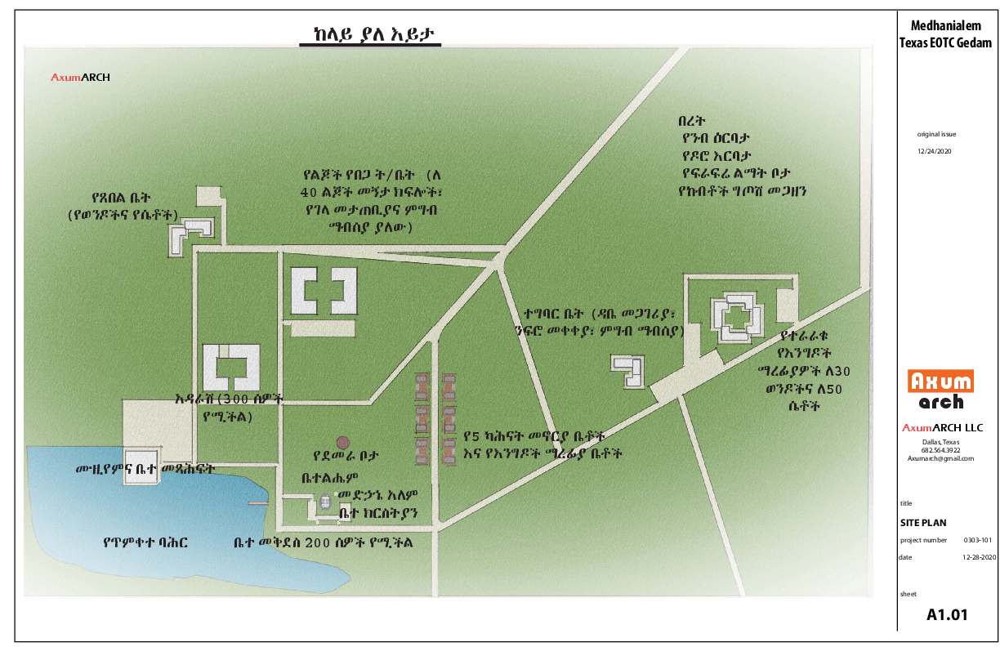
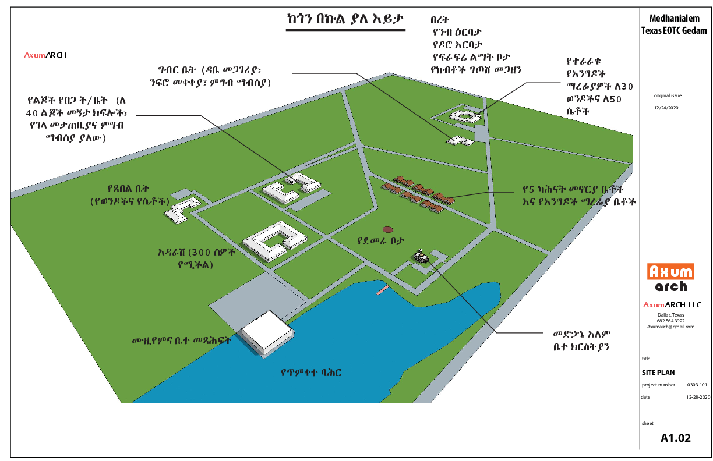
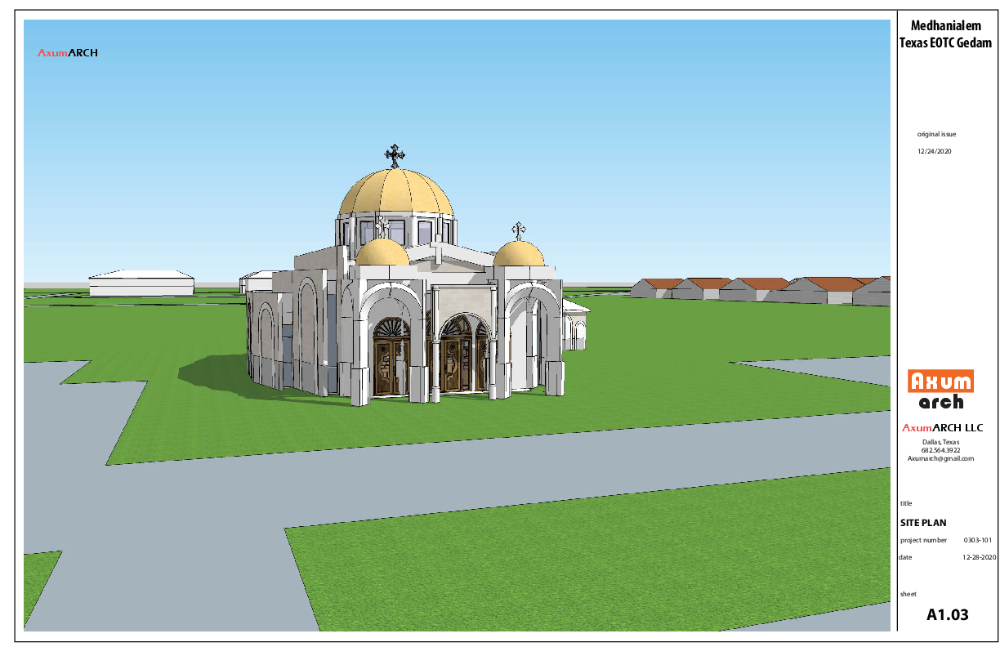

Future Construction
Explore the timeline, site plans, and architectural ambitions that will shape the Dallas campus. The gallery below showcases the transformed site-plan imagery from the Medhanialem partnership documents.

Site Plan • A1.01

Site Plan • A1.02

Site Plan • A1.03
To Be Built
- Ceremonial nave with 200–300 seat capacity and expanded community hall.
- Guest lodges and meditation terraces overlooking the Dallas skyline.
- Agricultural courtyards with poultry, orchards, and livestock barns to support self-sufficiency.
- Children’s dormitories, museums, libraries, and hospitality houses for pilgrims.
- Water features, baptismal wells, and dedicated retreat spaces for clergy.